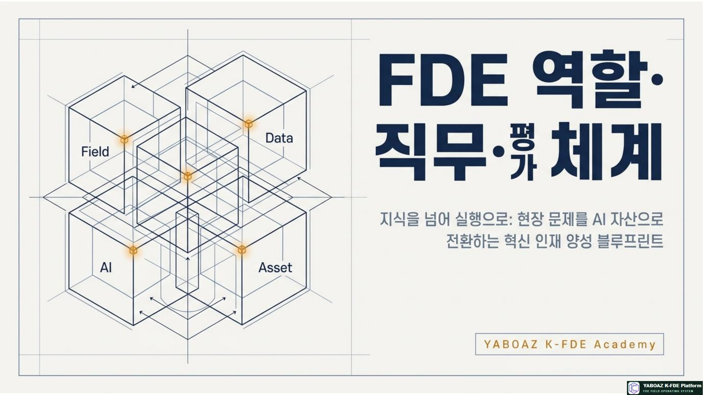
1. FDE의 기본 정의
FDE는 단순 개발자·컨설턴트·데이터 분석가·기획자의 어느 하나가 아닙니다. 현장과 문제, 데이터와 의미, AI와 실행, 성과와 자산을 연결하는 실행형 설계자입니다.
Field현장과 문제
실제 업무 흐름·병목·예외·암묵지 발견
Evidence데이터와 의미
관찰·문서·로그를 출처와 신뢰도로 구조화
ExecutionAI와 실행
판단·Agent·Human Gate·워크플로 설계
Evolution성과와 자산
KPI 검증·개선·재사용 가능한 자산화
핵심 정의
FDE는 현장에 들어가 문제를 발견하고, Evidence로 검증하며, 온톨로지와 워크플로로 구조화하고, AI Agent와 사람의 승인 아래 MVP로 실행한 뒤 성과를 자산으로 전환하는 실행형 설계자입니다.
FDE는 현장에 들어가 문제를 발견하고, Evidence로 검증하며, 온톨로지와 워크플로로 구조화하고, AI Agent와 사람의 승인 아래 MVP로 실행한 뒤 성과를 자산으로 전환하는 실행형 설계자입니다.
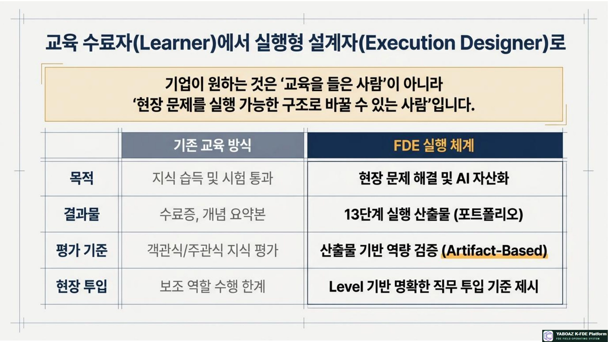
2. 7단계 성장 체계
성장 단계는 교육생의 학습 수준이면서 동시에 프로젝트 투입 권한을 의미합니다. 각 단계는 지식이 아니라 실제 산출물과 행동으로 통과해야 합니다.
LEVEL 1
Learner
FDE 언어와 기본 구조를 학습
- FDE·AX·온톨로지 이해
- 사례 리뷰·퀴즈
- 프로젝트 보조
LEVEL 2
Observer
현장 신호와 Evidence를 수집
- 관찰·인터뷰 기록
- 사실과 해석 분리
- Discovery 보조
LEVEL 3
Structurer
문제와 현장 지식을 구조화
- 2A4 문제정의
- 온톨로지 후보
- 인터뷰 설계
LEVEL 4
Builder
AI 실행 구조와 MVP를 구현
- 화면·데이터·API
- Human Gate·로그
- 작동 MVP
LEVEL 5
Validator
Bootcamp와 KPI로 성과 검증
- 기준선·테스트
- AI 품질 평가
- 개선 우선순위
LEVEL 6
Deployer
고객 현장에 적용하고 정착
- 배포·교육·변화관리
- 오류·예외 대응
- 운영 리포트
LEVEL 7
Architect
방법론·표준·플랫폼을 설계
- 자산 등급·품질 심사
- 교육·인증 체계
- 산업 확장 전략
GROWTH
성장 증거
다음 단계로 올라가는 기준
- 산출물 품질
- 현장 피드백
- KPI·자산화 결과
학습→관찰→구조화→구축→검증→배포→표준화
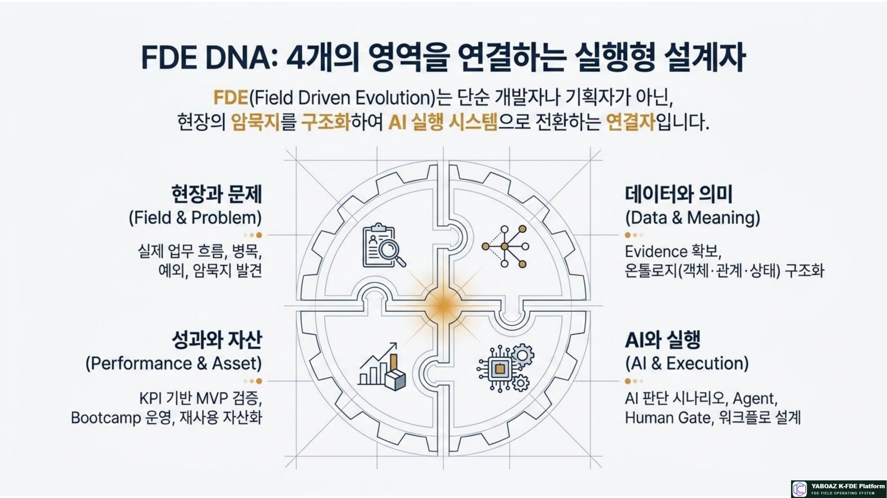
3. 단계별 역할·책임·산출물
| 단계 | 핵심 책임 | 대표 산출물 | 투입 가능 업무 | 승급 증거 |
|---|---|---|---|---|
| Learner | 개념과 사례를 이해 | 용어 정리·사례 리뷰 | 교육 실습·자료 정리 | 기본 평가 통과 |
| Observer | 현장 사실과 신호 수집 | 관찰표·Evidence 카드·탐색 보고서 | 현장 관찰·인터뷰 기록 | 출처·신뢰도·보안 등급 완성 |
| Structurer | 문제·지식·판단 기준 구조화 | 2A4·인터뷰 설계·온톨로지 | 문제정의·설계 워크숍 보조 | 7요소와 Evidence 연결 |
| Builder | 구조를 작동하는 MVP로 구현 | 화면·데이터·API·MVP | 프로토타입·AI 기능 구현 | 사용자 테스트 가능 |
| Validator | 성과와 사용자 수용성 입증 | 기준선·Bootcamp 보고서·KPI | 검증 운영·개선 분석 | 통과·조건부 통과 판정 |
| Deployer | 현장 적용·교육·운영 책임 | 배포 계획·매뉴얼·운영 리포트 | 고객 프로젝트 운영·변화관리 | 사용률·SLA·오류 대응 |
| Architect | 방법론·자산·표준·품질 확장 | 표준 문서·자산 라이브러리·교육 모듈 | 대형 프로젝트 총괄·심사 | 복수 프로젝트와 조직 표준 |
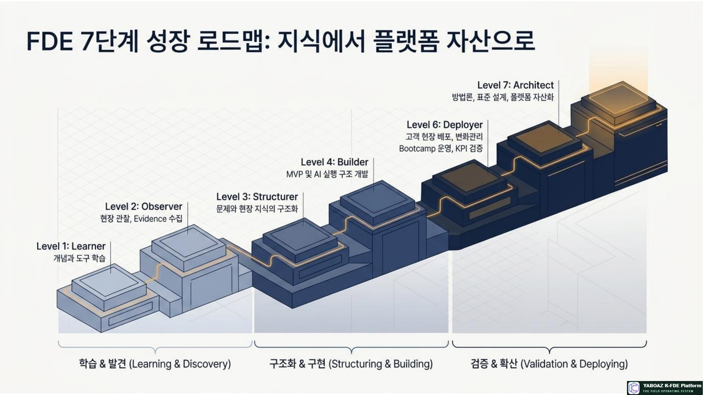
4. FDE 직무 영역
| 직무 | 주요 업무 | 핵심 질문 | 주요 협업 |
|---|---|---|---|
| Discovery FDE | 현장 탐색·Evidence·인터뷰 | 현장에서는 실제로 무슨 일이 일어나는가? | Observer·Structurer |
| Ontology FDE | 객체·관계·상태·이벤트·규칙 | AI가 현장을 이해하려면 무엇을 알아야 하는가? | Structurer·Agent |
| AI Judgment FDE | 판단 질문·근거·Human Gate | AI는 무엇을 제안하고 사람은 어디서 승인하는가? | Ontology·Workflow |
| Agent FDE | 역할·도구·권한·금지·실패 처리 | Agent는 어디까지 실행할 수 있는가? | Builder·Security |
| Workflow FDE | 승인·예외·알림·거버넌스 | 추천을 누가 어떤 절차로 실행하는가? | Approver·Deployer |
| MVP FDE | 화면·데이터·API·바이브코딩 | 가장 작게 만들 수 있는 실행 구조는 무엇인가? | Builder·Developer |
| Validation FDE | Bootcamp·KPI·피드백 | 기존 방식보다 무엇이 얼마나 좋아졌는가? | Validator·Client |
| Asset FDE | 자산 등록·등급·재사용 | 다음 프로젝트에서 무엇을 다시 쓸 수 있는가? | Architect·Library |
| Deployment FDE | 배포·교육·변화관리·운영 | 사용자가 업무 안에서 계속 쓰는가? | Client·Support |
| Architect FDE | 표준·교육·품질·사업화 | 공통 구조를 어떻게 확장 가능한 자산으로 만들까? | 전 직무·경영진 |
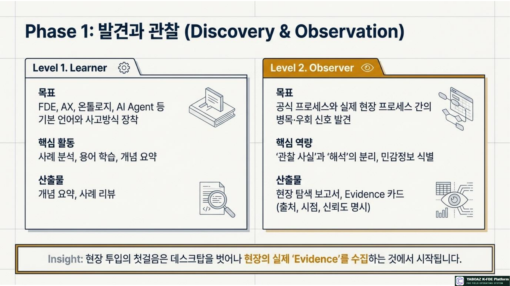
5. 12가지 핵심 스킬
| 스킬 | 실무 정의 | 주요 역할 | 평가 증거 |
|---|---|---|---|
| Problem Decomposition | 증상을 원인·범위·목표로 분해 | Observer·Structurer | 2A4 문제정의 |
| Domain-Driven Design | 현장 언어와 도메인 객체 구조화 | Structurer·Architect | 용어집·온톨로지 |
| Event Storming | 이벤트와 상태 전이로 업무 흐름 이해 | Structurer·Workflow | 이벤트 맵·상태표 |
| Service Blueprint | 사용자 행동·시스템·지원 업무 연결 | Observer·Workflow | 서비스 블루프린트 |
| Data Modeling | 객체·속성·관계·로그를 저장 구조로 변환 | Ontology·MVP | 데이터 모델·API |
| API Integration | 외부 시스템과 판단·실행 연결 | Agent·MVP | API 계약·연동 테스트 |
| AI Agent Engineering | 역할·도구·권한·실패·감사 설계 | Agent FDE | Agent 사양서 |
| Governance | 책임·권한·승인·보안·감사 통제 | Workflow·Architect | RACI·권한표·로그 |
| Evaluation | 기준선·테스트·KPI로 효과 측정 | Validator | Bootcamp 보고서 |
| Change Management | 사용자 교육·저항·운영 정착 관리 | Deployer | 배포·교육 계획 |
| Productized Consulting | 검증 구조를 패키지·SaaS로 전환 | Asset·Architect | 자산·패키지 설계 |
| Executive Communication | 문제·성과·리스크를 의사결정자에게 설명 | Deployer·Architect | 경영진 보고서·발표 |
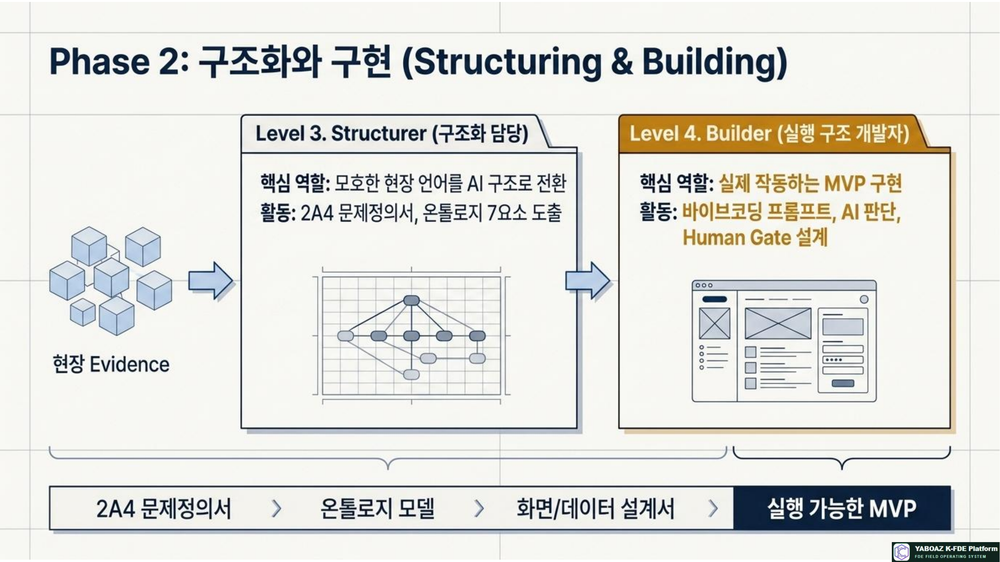
6. 평가 체계와 배점
FDE는 지식 시험만으로 평가하지 않습니다. 현장 산출물, 실제 작동, 사용자 검증, KPI와 자산화 결과를 함께 평가합니다.
| 평가 영역 | 비중 | 평가 질문 | 대표 증거 |
|---|---|---|---|
| 개념 이해 | 15% | FDE·AX·온톨로지·Agent를 설명하는가? | 시험·사례 리뷰 |
| 현장 분석 | 15% | 실제 프로세스와 반복 신호를 발견했는가? | Discovery·Evidence |
| 구조화 | 20% | 문제와 현장 지식을 실행 구조로 바꿨는가? | 2A4·온톨로지·규칙 |
| 실행 설계 | 20% | AI·Human Gate·워크플로·MVP가 연결되는가? | Agent·화면·MVP |
| 검증 | 15% | 기준선 대비 성과를 입증했는가? | Bootcamp·KPI |
| 자산화 | 10% | 재사용 조건과 등급을 정의했는가? | 자산 등록 카드 |
| 커뮤니케이션 | 5% | 고객·경영진·사용자에게 명확히 설명하는가? | 발표·보고서 |
평가 원칙
산출물이 많다고 높은 점수를 주지 않습니다. 문제와 Evidence의 연결, 실행 가능성, 안전한 승인 구조, KPI 검증, 다른 사람이 재사용할 수 있는 설명성이 핵심입니다.
산출물이 많다고 높은 점수를 주지 않습니다. 문제와 Evidence의 연결, 실행 가능성, 안전한 승인 구조, KPI 검증, 다른 사람이 재사용할 수 있는 설명성이 핵심입니다.
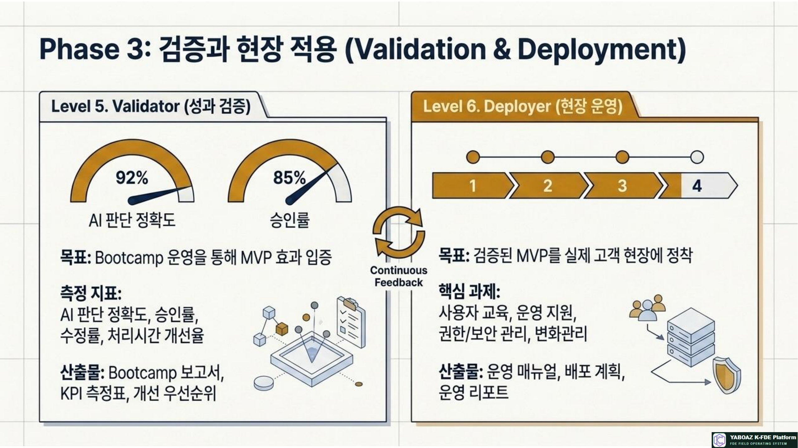
7. 산출물 기반 루브릭
| 산출물 | 우수 | 보통 | 미흡 |
|---|---|---|---|
| Evidence 카드 | 출처·시점·신뢰도·보안 등급이 명확 | 일부 출처 누락 | 의견 중심 |
| 2A4 문제정의 | 문제·원인·목표·범위·KPI 명확 | 문제는 있으나 범위가 넓음 | 증상만 작성 |
| 온톨로지 | 7요소가 판단·행동과 연결 | 요소는 있으나 관계가 약함 | 명사 목록 수준 |
| AI 판단 | 입력·기준·근거·출력·승인 명확 | 판단 질문만 존재 | AI 역할 모호 |
| Agent 사양서 | 권한·금지·도구·실패·로그 포함 | 일부 항목 누락 | 챗봇 설명 수준 |
| 워크플로 | 상태·승인·예외·KPI 포함 | 정상 흐름만 존재 | 순서도 수준 |
| MVP | 사용자 테스트·로그·KPI 작동 | 데모 수준 | 화면 목업 수준 |
| Bootcamp | 기준선·시나리오·개선율·한계 제시 | 결과만 제시 | 측정 없음 |
| 자산 카드 | 등급·제한·소유자·재사용 조건 명확 | 후보만 등록 | 파일 저장 수준 |
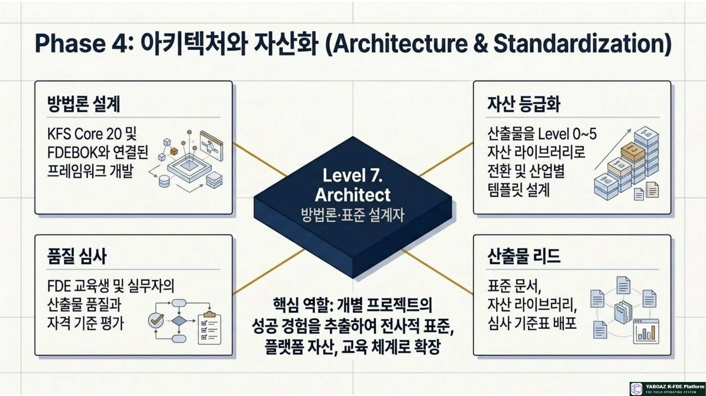
8. 민간자격·인증 체계
| 등급 | 명칭 | 인증 기준 | 현장 역할 |
|---|---|---|---|
| Level 1 | FDE Associate | 기본 개념·사례 분석·기초 시험 | 교육 실습·자료 정리 |
| Level 2 | FDE Practitioner | Evidence·2A4·Discovery 산출물 | 현장 관찰·문제정의 보조 |
| Level 3 | FDE Professional | 온톨로지·AI 판단·워크플로 설계 | 구조화·설계 워크숍 |
| Level 4 | FDE Senior | MVP·Bootcamp·고객 프로젝트 참여 | Builder·Validator·Deployer |
| Level 5 | FDE Architect | 자산화·표준화·교육·품질 심사 | 총괄·Architect·심사위원 |
온라인 시험+실습 과제+포트폴리오+발표 평가+심사위원 검토
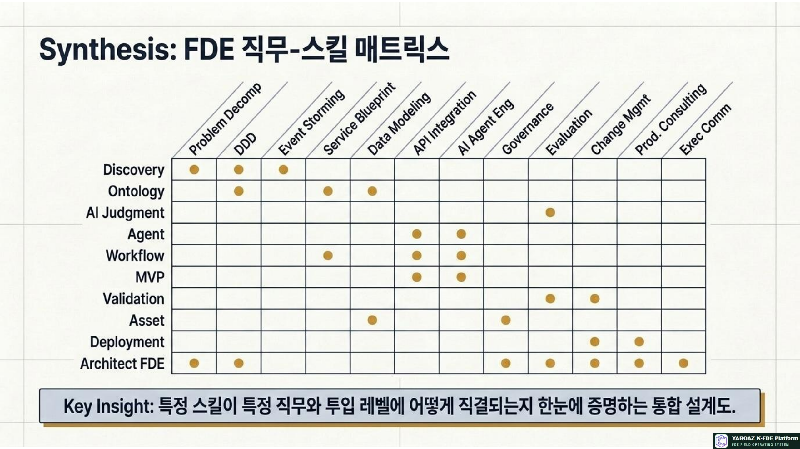
9. 포트폴리오 표준
FDE의 실력은 수료증보다 문제를 어떻게 구조화하고 실행했는지로 증명됩니다. 포트폴리오는 산출물의 나열이 아니라 하나의 문제 해결 여정을 보여줘야 합니다.
| 구성 | 포함 내용 | 검토 기준 |
|---|---|---|
| 관심 산업·역할 | 현장 경험·강점·목표 직무 | 어떤 문제에 강한가? |
| 문제정의 사례 | 2A4·범위·KPI | 증상과 원인을 구분했는가? |
| Discovery 사례 | 현장 탐색·Evidence·병목 | 사실과 해석이 분리되었는가? |
| 온톨로지 설계 | 7요소·용어집·관계 | AI 판단과 연결되는가? |
| AI·Agent 설계 | 판단 질문·권한·Human Gate | 금지 행동과 근거가 있는가? |
| 워크플로·MVP | 상태·승인·화면·작동 결과 | 실제 사용 가능한가? |
| Bootcamp·KPI | 기준선·테스트·개선율·피드백 | 성과를 재현할 수 있는가? |
| 자산화 결과 | 등록 카드·등급·재사용 조건 | 다음 프로젝트에 적용 가능한가? |
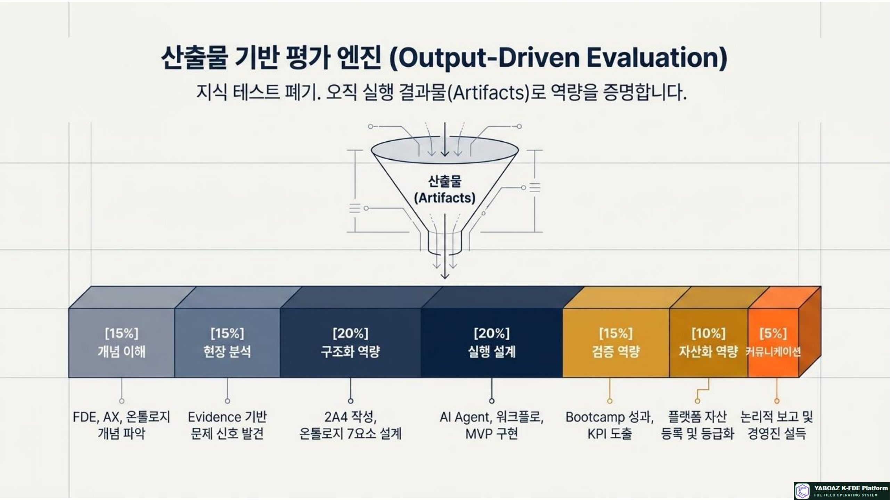
10. 현장 투입 기준
| 단계 | 단독 수행 가능 | 반드시 필요한 감독 | 권장 투입 위치 |
|---|---|---|---|
| Learner | 교육 과제 | 모든 고객 산출물 | Academy 실습 |
| Observer | 관찰 기록·Evidence 초안 | 고객 인터뷰·민감정보 | Discovery 보조 |
| Structurer | 문제정의·온톨로지 초안 | 최종 범위·고위험 규칙 | 설계 보조·워크숍 |
| Builder | 프로토타입·저위험 기능 | 운영 배포·보안·고위험 실행 | MVP 개발 |
| Validator | 테스트·KPI 분석 | 통과·자산화 최종 판단 | Bootcamp 운영 |
| Deployer | 교육·운영·변화관리 | 계약·법무·대형 장애 | 고객 현장 책임자 |
| Architect | 프로젝트 총괄·표준·심사 | 조직 전략·최종 의사결정 | 대형 프로젝트·품질위원회 |
권장 최소 기준
고객과 직접 문제를 정의하는 역할은 Structurer 이상, 작동하는 MVP를 책임지는 역할은 Builder 이상, 고객 현장 적용 책임자는 Deployer 이상, 표준·자격·대형 프로젝트 총괄은 Architect 수준이 적합합니다.
고객과 직접 문제를 정의하는 역할은 Structurer 이상, 작동하는 MVP를 책임지는 역할은 Builder 이상, 고객 현장 적용 책임자는 Deployer 이상, 표준·자격·대형 프로젝트 총괄은 Architect 수준이 적합합니다.
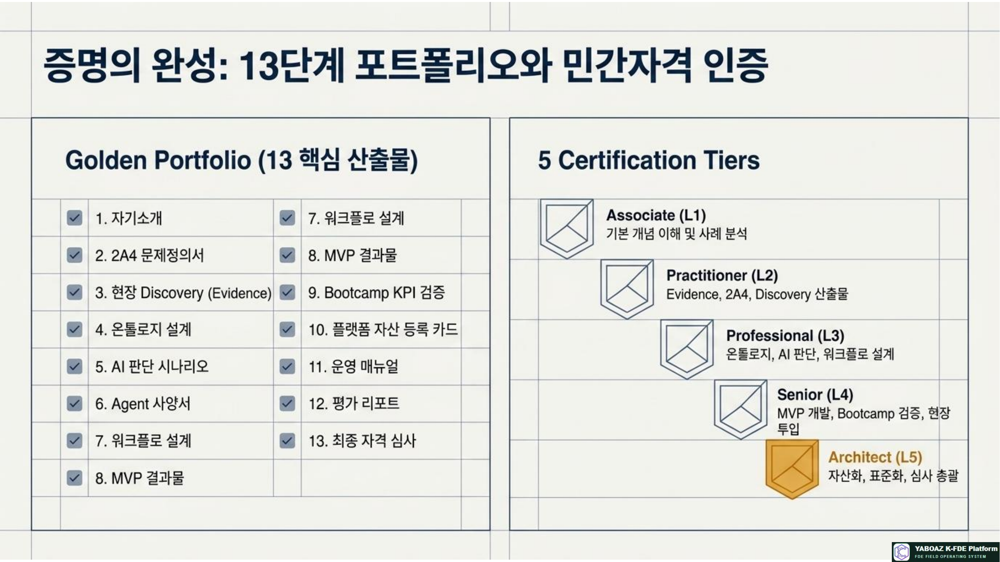
11. 성장 로드맵
0~3개월 · Learner→3~6개월 · Observer→6~12개월 · Structurer→12~18개월 · Builder→18~24개월 · Validator→24개월+ · Deployer→Architect
| 성장 구간 | 핵심 학습 | 필수 프로젝트 증거 | 다음 목표 |
|---|---|---|---|
| 기초 | FDE 언어·13단계·사례 | 개념 시험·사례 리뷰 | 현장 관찰 |
| 현장 | 관찰·인터뷰·Evidence | 탐색 보고서·증거 카드 | 문제 구조화 |
| 구조화 | 2A4·온톨로지·판단 기준 | 문제정의·7요소 모델 | MVP 구축 |
| 구축 | AI·Agent·워크플로·바이브코딩 | 사용 가능한 MVP | 성과 검증 |
| 검증 | 기준선·KPI·사용자 테스트 | Bootcamp 보고서 | 고객 적용 |
| 적용 | 운영·교육·변화관리·자산화 | 운영 리포트·재사용 자산 | 표준·품질 설계 |
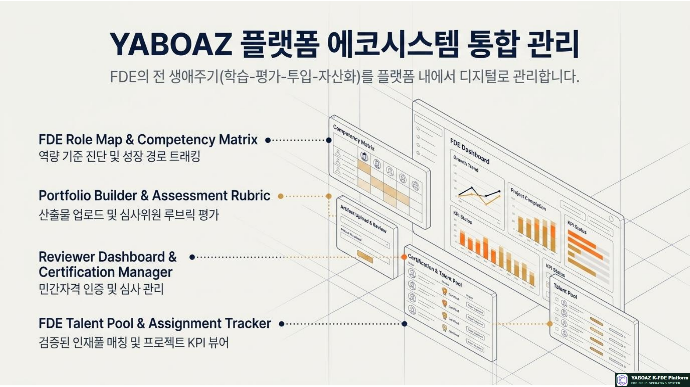
12. 운영 체크리스트
현재 역할과 다음 성장 단계가 명확한가
단계별 산출물과 승급 증거가 정의되었는가
현장 사실과 Evidence를 구분하는가
문제정의·온톨로지·AI 판단이 연결되는가
Agent 권한·금지 행동·실패 처리가 있는가
Human Gate와 감사 로그가 설계되었는가
MVP가 실제 사용자 테스트 가능한가
기준선·KPI·Bootcamp 결과가 있는가
자산 등록·등급·재사용 조건이 있는가
포트폴리오에 본인 기여도가 표시되었는가
현장 투입 범위와 감독 수준이 합의되었는가
다음 프로젝트에서 재사용 가능한 증거가 있는가
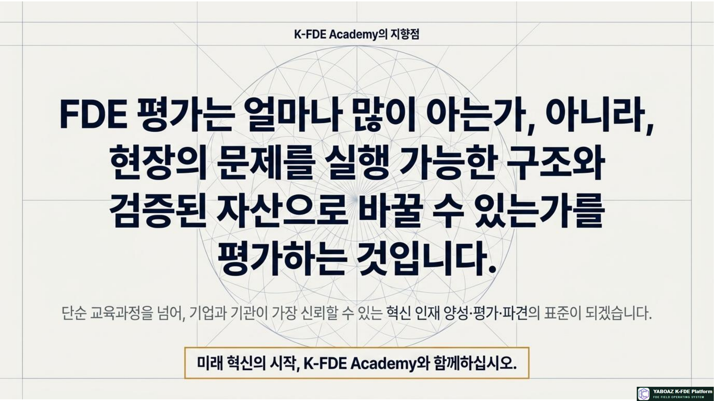
13. 교육 실습 구성
| 시간 | 실습 내용 | 산출물 |
|---|---|---|
| 30분 | FDE 7단계 역할 이해 | 역할 맵 |
| 40분 | 본인 역량 자가진단 | Competency Matrix |
| 40분 | 12스킬과 산출물 매핑 | 스킬 증거표 |
| 50분 | 포트폴리오 구성 | Portfolio Outline |
| 40분 | 자격 등급과 현장 투입 목표 | 인증 로드맵 |
| 40분 | 개인 성장 계획 | 90일 실행계획 |
| 40분 | 발표와 피드백 | 개선 백로그 |
14. 평가 기준
| 평가 항목 | 배점 |
|---|---|
| 역할·성장 단계 이해 | 10 |
| 현장 분석과 Evidence 품질 | 15 |
| 문제·온톨로지 구조화 | 20 |
| AI Agent·Human Gate·워크플로 실행 설계 | 20 |
| MVP·Bootcamp·KPI 검증 | 15 |
| 자산화·재사용성 | 10 |
| 커뮤니케이션·포트폴리오 | 10 |
| 합계 | 100 |
53단계의 최종 목적
FDE 평가는 얼마나 많이 아는가가 아니라, 현장의 문제를 실행 가능한 구조와 검증된 자산으로 바꿀 수 있는가를 평가하는 것입니다. 역할·역량·산출물·프로젝트·포트폴리오·인증·투입 기준이 연결될 때 K-FDE Academy는 신뢰 가능한 인재 운영 체계가 됩니다.
FDE 평가는 얼마나 많이 아는가가 아니라, 현장의 문제를 실행 가능한 구조와 검증된 자산으로 바꿀 수 있는가를 평가하는 것입니다. 역할·역량·산출물·프로젝트·포트폴리오·인증·투입 기준이 연결될 때 K-FDE Academy는 신뢰 가능한 인재 운영 체계가 됩니다.